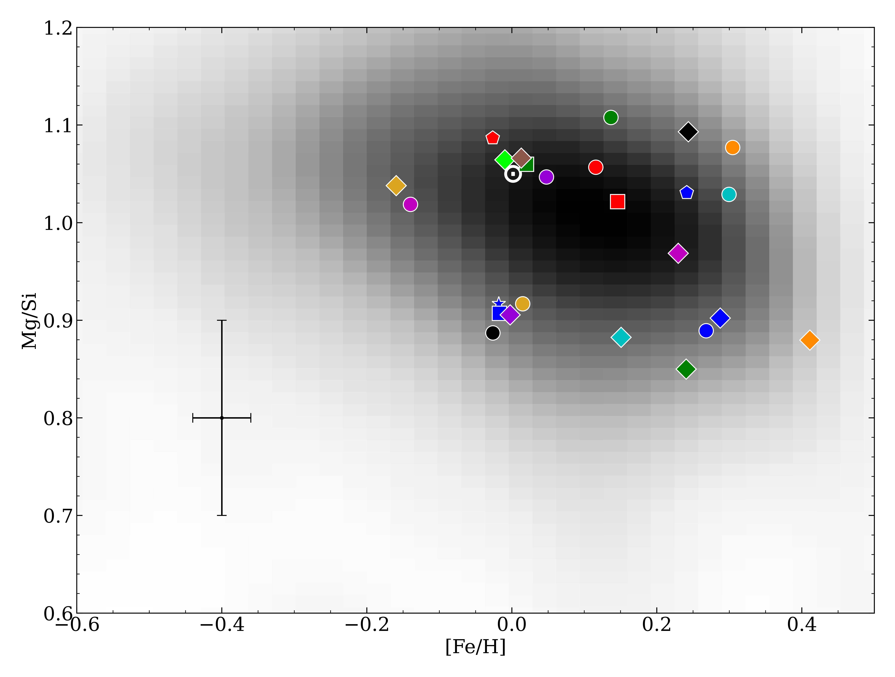
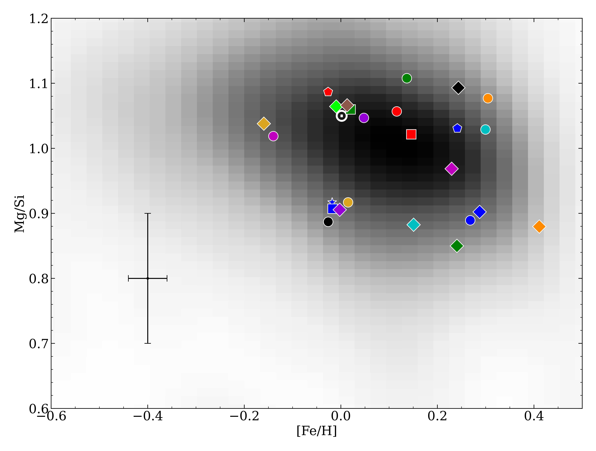
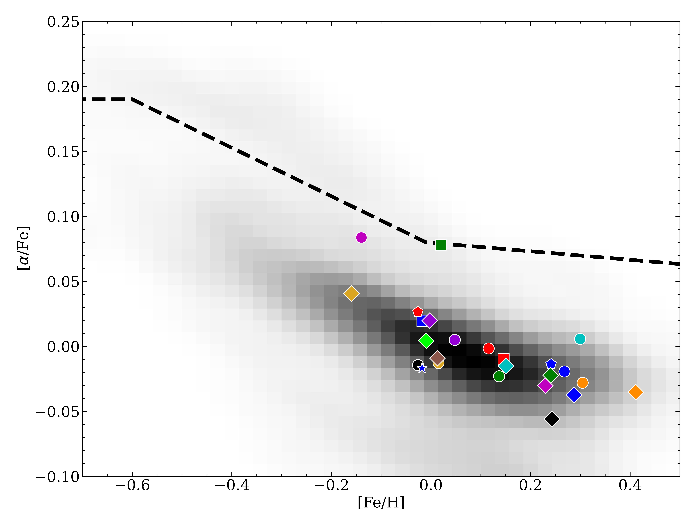
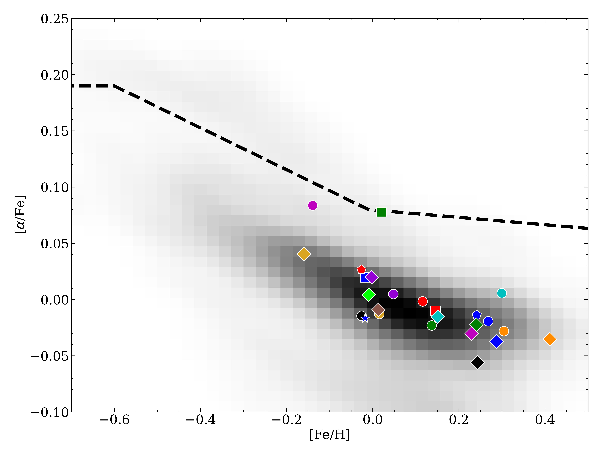

JWST Abundance Research Note
In July 2022 my collaborators and I published a research note reporting chemical abundances for 25 stars that JWST will observe in its first year. These are some figures that help visualize our results. Errorbars are representative of the average uncertainty. JWST targets are overlayed on a density map of my sample of ~4,500 stars for which I have determined abundances using KeckSpec, an implementation of the Cannon. These abundances will be released in a forthcoming catalog.
 

 
